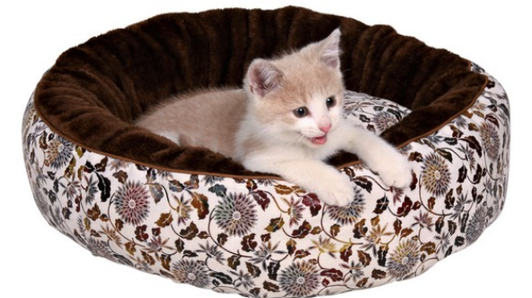
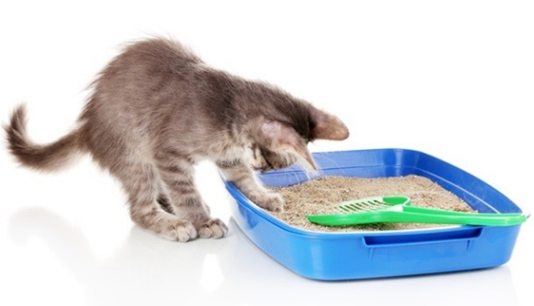
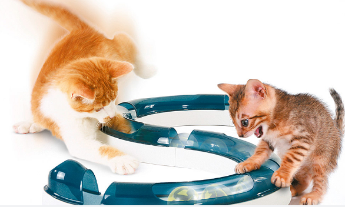

 Начало
Во-первых, надо приобрести переноску для кота, покупайте ее на вырост, с учетом будущих размеров Вашего питомца во взрослом возрасте. Эта переноска еще не раз Вам пригодиться, когда потребуется выезжать с кошкой к ветеринару, на выставки, путешествовать и пр. Эти переноски бывают разных видов и размеров, сделаны из пластика или матерчатые. Выбор за Вами!
Спальное место котенка
Дома Вам необходимо оборудовать спальное место для котенка. Сегодня представлено огромное разнообразие уютных кроваток для кошек, это могут быть и коврики, и лежаки, и специальные уютные домики. Попробуйте найти что-то похожее на то, что было у котенка раньше, в доме его заводчика.
Выбор места для туалета котенка
Конечно же нужно выделить место для туалета, купить специальный лоток. Если вы покупаете котенка у заводчика, как правило, котенок уже приучен к лотку. Вам остается лишь показать котенку это место в его новом доме, для этого после еды его необходимо сразу помещать на какое-то время в лоток.
Используйте тот же наполнитель для туалета, что был у заводчика. Знакомый запах наполнителя позволит котенку быстро вспомнить для чего это место предназначено.
Не злитесь на котенка, если вдруг случится маленькая лужа на полу, просто котенок еще не привык к новой обстановке. Чтобы этого не повторилось, протрите салфеткой это место и намажьте этой же салфеткой лоток, так котенок быстрее сориентируется по запаху что к чему. А место его оплошности тщательно вымойте средствами, уничтожающими запах.

Если котенок не приучен к лотку, то воспользуйтесь следующим советом. После еды помещайте котенка в лоток на какое-то время, пошебуршите наполнителем, инстинкт заставит котенка рыть себе ямку, а если он роет ямку, значит захочет и справить нужду. Если котик сделал лужу рядом с лотком, промокните салфеткой это место и намажьте этой салфеткой лоток, запах – лучший ориентир и советчик для кошки. Обязательно содержите лоток в чистоте, регулярно обновляйте наполнитель, убирая загрязненные участки.
Мисочки для котенка
Теперь поговорим о мисках. Оптимально, если Вы купите для котенка три вида
мисок: одна - для сухого корма, другая – для жидкой еды и консервов, а третья- для воды. Сейчас есть огромное разнообразие мисок, обратитесь к продавцу зоомагазина, он поможет вам сделать правильный выбор.
Очень важно питание котенка
Отдельная тема - это питание котенка. Питание кошки – это ключевой фактор ее здоровья, что же говорить о питании маленького котенка.
В его нежном возрасте закладывается здоровье на всю оставшуюся жизнь, от того насколько гармонично и правильно будет развиваться растущий организм зависит здоровье, выносливость и долголетие животного.
Кроме того, растущий и неокрепший организм котенка подвержен рискам заражения различными заболеваниями и только сильный иммунитет, основанный на полноценном и правильном питании убережет котенка от этих неприятностей.
Подберите ему полезный и сбалансированный корм от производителя, отвечающего за свою репутацию многочисленными годами своей безупречной производственной практики.
Уход за котенком в 1 месяц, уход за котенком в 2 месяца, уход за котенком в 6 месяцев отличаются друг от друга. Поэтому на кормах специально указывается возраст котенка, для которого они предназначены.
Режим питания у котят меняется по мере их роста, так в возрасте до 3-х месяцев котят необходимо кормить 6 раз в сутки, с 3-х до 4 месяцев- 5 раз, 5-6 месяцев- 4 раза, позже достаточно и двухразового кормления, а с 10 месяцев кошки способны сами определять, когда им необходимо подкрепиться.
Игрушки и прочие штучки для развития и общения с котенком
Не забудьте и о игрушках для котенка. Покупая игрушки, выбирайте мягкие, изготовленные из упругих материалов. Это могут быть мячики, меховые шарики, мышки и многое другое. Главное, чтобы у игрушки не было мелких деталей, которые животное может оторвать и случайно проглотить.
Не забывайте, кошка - это хищник, ей необходимо постоянно играть, охотиться, кувыркаться и лазить. Подвижный образ жизни позволяет животному находиться в активной форме и хорошем самочувствии. Для котят это особенно актуально, ведь в процессе игры они развивают свою ловкость, гибкость и мышечную активность. Все это позволяет котенку гармонично расти и развиваться.
Чтобы избежать неприятности с испорченной мебелью, обязательно купите когтеточку. Отучить от этого животное нельзя, это заложено в его генах, ведь так они заботятся о своих когтях и стачивают их. Так что просто предоставьте котенку специальное место для наточки его коготков.
Особенности ухода за котенком
Особый уход требует шерсть котенка, купите специальный шампунь, с учетом особенности шерсти Вашего питомца.
Купать кошку желательно не чаще раза в три месяца. Помимо влажной чистки есть еще сухие шампуни, которые используют раз в месяц. Они позволяют поддерживать чистоту шерсти без намокания. Для этого нужно нанести равномерно специальный спрей на шерстку котенка, массирующими движениями втереть этот спрей и расческой вычесать грязь с шерстки.
Расчесывать котенка нужно каждый день, это особенно касается длинношерстых кошек. Приучить к этому кошку можно именно в маленьком возрасте, потом это сделать уже не получится.
Свалявшаяся в колтуны шерсть может неприятно тянуть и выдираться из кожи котенка, принося ему неприятные и болезненные ощущения.
Для вычесывания нужно подбирать щетку в зависимости от густоты шерсти, ее длины и мягкости. Чем жестче шерсть, тем жестче щетка. Например, для нежной шерстки котенка можно использовать щетку с резиновыми зубчиками.
Начинайте чесать кошку со спины, от ее шеи. Старайтесь не задевать уши, они очень чувствительные у кошки. Затем по бокам, меняя бока по очереди. Плавно переходя на живот. Переверните кошку на спину и аккуратными движениями расчесывайте живот, кожа здесь более чувствительная, чем на спине, поэтому не делайте резких и грубых движение. Расчесывайте плавно и нежно.
Если образовались колтуны аккуратно удалите их у основания образования колтуна.
Расчесывают кошек по направлению роста шерсти, исключения могут составлять некоторые породы, например, персидские кошки, которых иногда рекомендуют сначала расчесать против направления роста шерсти. Обязательно уточните у заводчика как правильно расчесывать Вашего котенка.
Помимо мытья и расчесывания есть еще несколько обязательных процедур ухода за котенком.
Внимания требуют и коготки. Примерно раз в две недели нужно проводить осмотр и стрижку когтей. Обращайте внимание на цвет когтей, при стрижке коготков специальными ножницами очень важно не повредить кровеносный сосуд в полости когтя. Ну и конечно пусть Ваш питомец активно пользуется когтеточкой.
Все выше перечисленные советы и приспособления позволят сделать жизнь Вашему котенку удобнее, но самым главным для него является Ваше внимание.
Не оставляйте котенка надолго одного, уделяется ему Ваше время, ведь он Ваш новый друг и захочет познакомиться с Вами получше.
 |